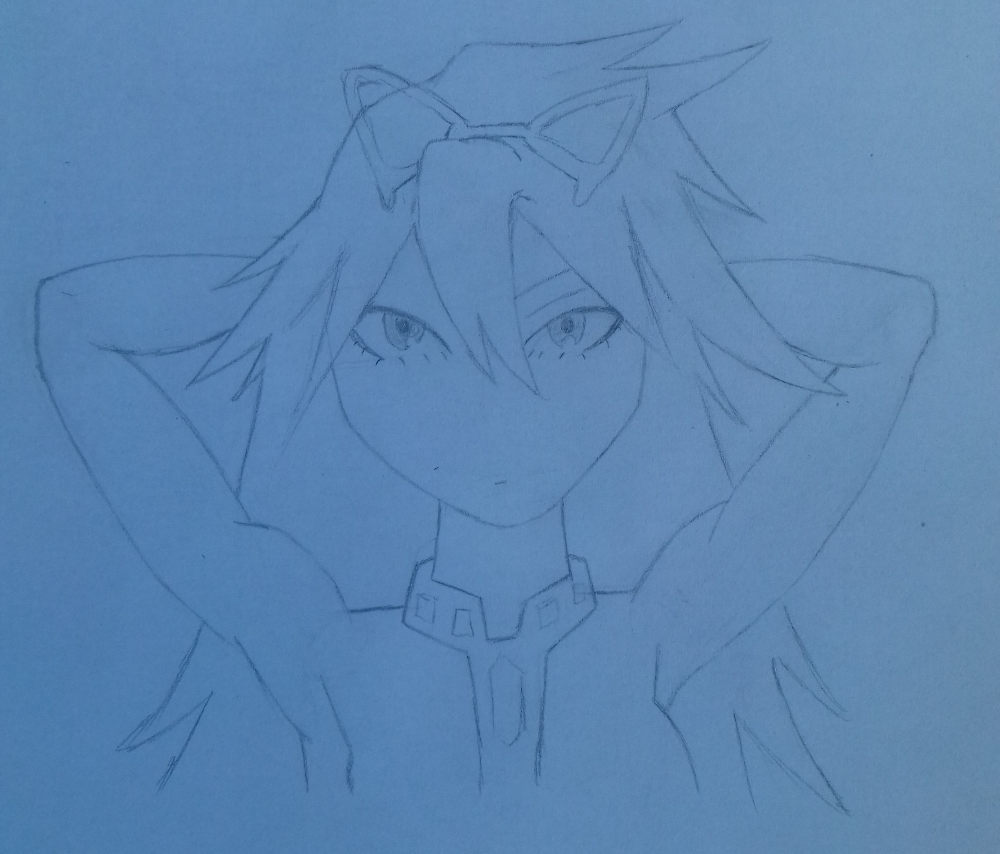
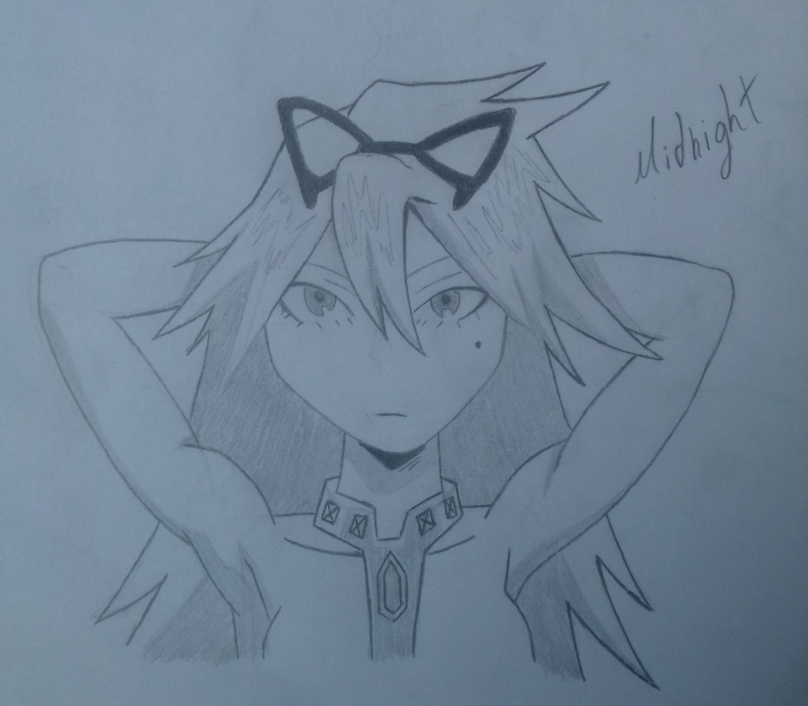

Primeiramente você faz um esboço, para ter uma ideia do que fazer, como vai ficar ,as medidas, etc, é a inicialização e uma das partes mais importantes do desemho aqui um link de um video sobre esboços para você ter uma ideia melhor
Agora você pode literalmente fazer o seu desenho, eu gosto de nesse momento fazer quase exatamente como vai ficar, para ter uma perfeita ideia do resultado.
Agora, a finalização! É aqui que você vai ver o resultado de todo o trabalho, e sem duvida é a parte mais divertida de se fazer, desenhe fazendo todos os detalhes, com um lápis escuro, e não se esqueça de sombrear!